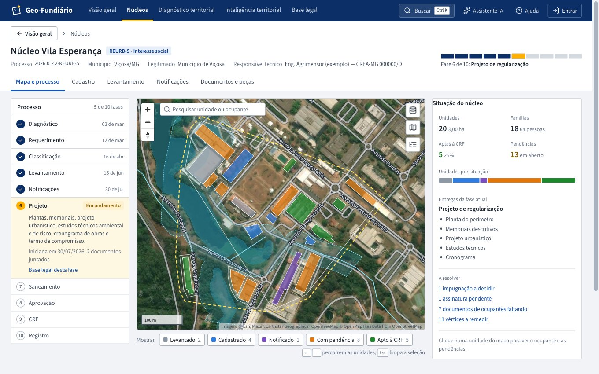
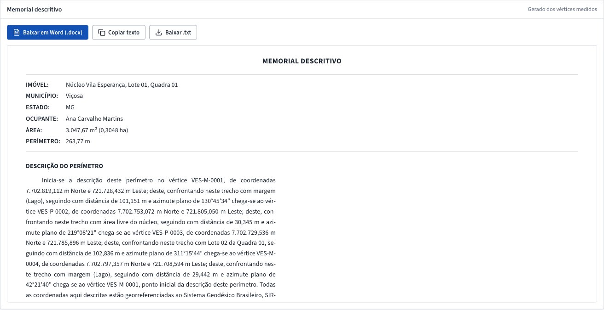
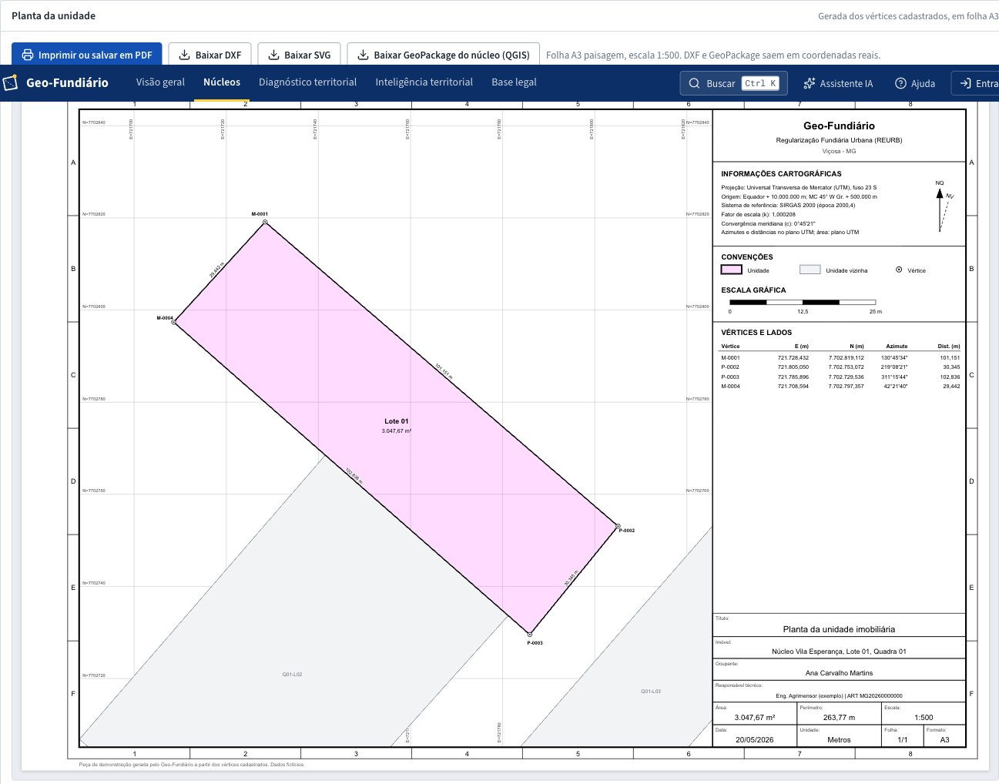
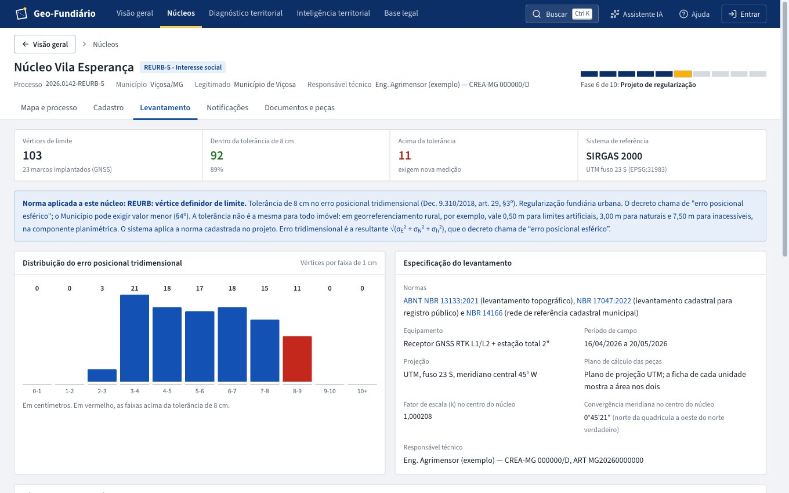
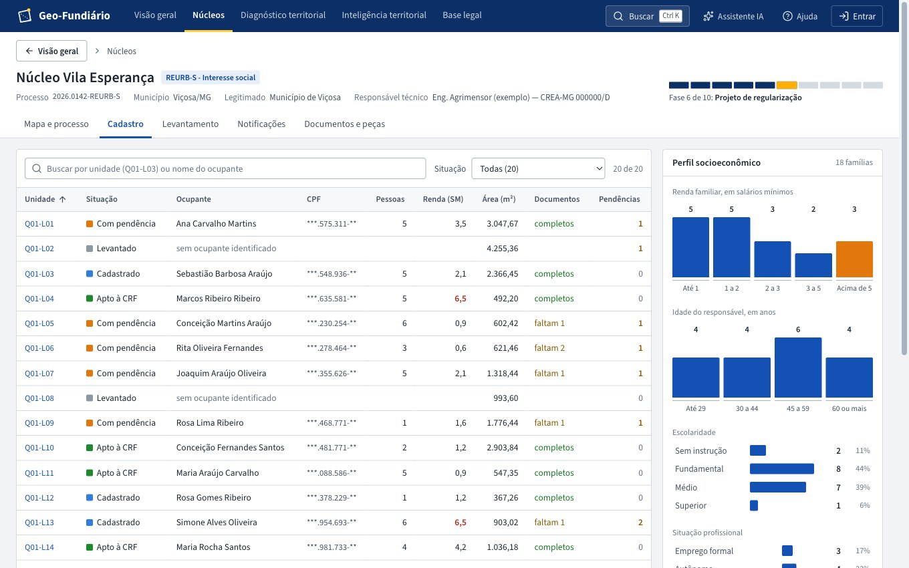

Gestão fundiária para prefeituras
O Geo-Fundiário leva cada núcleo urbano do levantamento de campo ao registro: cadastro, mapa, memorial, planta e as 10 fases da REURB.
Cada núcleo em uma tela
À esquerda, as fases do processo com datas e prazos. No centro, o mapa com cada unidade na cor da sua situação. À direita, o que falta resolver.
Abrir o núcleo Vila Esperança
Peças técnicas geradas dos vértices
Quatro tarefas que costumam pedir planilha, CAD e editor de texto.
O memorial descritivo sai dos vértices medidos, com azimutes, distâncias e confrontantes. Baixe em DOCX para revisar e assinar.
Ver a ficha de uma unidadeA planta sai em folha A3, com malha de coordenadas, convenções e selo. Exporte também em DXF e GeoPackage.
Ver a planta de uma unidadeCada vértice é comparado com a tolerância da norma do projeto: 8 cm na REURB. A lista mostra o que precisa ser medido de novo.
Ver o controle do levantamentoOcupante, renda, família e documentos que faltam ficam na linha da unidade. O CPF aparece mascarado.
Ver o cadastro do núcleo



O banco de dados
O cadastro segue o modelo da ISO 19152 (LADM). A geometria fica georreferenciada ao Sistema Geodésico Brasileiro (SGB) - SIRGAS 2000, nada é sobrescrito, e cada alteração guarda o autor, a data e o valor anterior.
Diagnóstico territorial em 11 fontes oficiais
Escolha um núcleo ou importe um polígono. O sistema consulta as bases públicas na hora e mede sobreposições e distâncias.
- Cada achado traz a base legal e a fonte.
- As feições encontradas aparecem no mapa.
- O resultado gravado alimenta o dossiê do núcleo.
Perguntas
O que prefeituras e equipes técnicas costumam querer saber antes de testar.
Ler a documentaçãoOs dados da demonstração são reais?
Não. Os 3 núcleos são fictícios, desenhados sobre edificações do campus da UFV, e nenhuma pessoa citada existe.
Onde ficam os dados do município?
No servidor que o município escolher. O sistema roda em PostgreSQL com PostGIS e não depende de serviço pago.
Serve para área rural?
Ainda não. O primeiro módulo é a regularização urbana da Lei 13.465/2017; a rural está planejada.
Quem desenvolve?
O GPGeoIA, grupo de pesquisa da Universidade Federal de Viçosa, sob responsabilidade do Prof. Dr. Darlan Miranda Nunes.